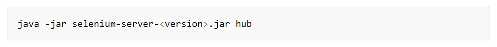
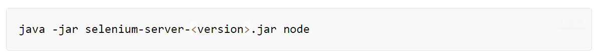

Selenium Grid permet d'exécuter des scripts WebDriver sur des machines distantes en routant les commandes envoyées par le client vers des instances de navigateur distantes. En fait, cela permet d'exécuter de manière simple des tests en parallèle sur plusieurs machine.
Selenium Grid permet également de gérer différentes versions et configurations d'un navigateur de manière centralisée, ce qui évite de devoir gérer chaque test de manière individuelle.
Cependant, Selenium Grid possède des limites ce qui pourrait l'amener à ne pas pouvoir répondre à certains besoins spécifiques comme par exemple la gestion de l'infrastructure.
Néanmoins, voici quelques unes de ses principales fonctionnalités :
Principalement :
Grid est utilisé pour accélérer l'exécution d'une passe de test en utilisant plusieurs machines pour exécuter des tests en parallèle. Par exemple, sur un grand nombre de test, il est possible de configurer Selenium Grid pour prendre ne charge plusieurs machines différentes afin de diviser le temps d'exécution des tests (plus rapide que d'exécuter toute la suite de tests de manière séquentielle sur une seule machine).
Grid est également utilisé pour prendre en charge l'exécution de tests sur plusieurs environnements d'exécution, en particulier sur différents navigateurs en même temps.
Par exemple, une "grille" de machines virtuelles peut être configurée, chacune prenant en charge un navigateur différent que l'application à tester doit prendre en charge.
Lorsque la suite de tests est exécutée, Selenium-Grid reçoit chaque combinaison test-navigateur et attribue à chaque test une exécution sur le navigateur requis.
Il est également possible d'de configurer une grille pour tester l'application sur différentes versions d'un même navigateur. Les "grilles" de Selenium sont donc très flexibles au niveau de la configuration.
Etant donné que Selenium Grid intervient au niveau de l'exécution des tests, avant de l'utiliser, il est nécessaire d'avoir des scripts Selenium à exécuter.
Cela peut être des scripts qui ont été réalisés via Selenium WebDriver ou des scripts qui ont été exportés de Selenium IDE par exemple.
Le mode Standalone est l'union de tous les composants de Selenium Grid. Une grille entièrement fonctionnelle est disponible après son démarrage en mode autonome.
Le mode autonome (Standalone) est également le mode le plus simple pour faire tourner une grille de sélénium.
Par défaut, le serveur écoutera sur http://localhost:4444, et c'est l'URL vers laquelle vous devez pointer vos tests RemoteWebDriver.
Le serveur détectera les pilotes disponibles qu'il peut utiliser à partir du système PATH
Un Hub est la combinaison des composants suivants :
Pour en savoir plus sur les différents composants, n'hésitez pas à aller voir la documentation officielle.
Un ou plusieurs nœuds peuvent être démarrés dans cette configuration et le serveur détectera les pilotes disponibles qu'il peut utiliser à partir du système PATH.
En mode Distributed chaque composant doit être démarré de son côté. Cette configuration est plus adaptée aux grandes grilles.
L'ordre de démarrage n'est pas forcément important mais il est néanmoins conseillé de suivre ces étapes :
Après le démarrage d'une grille, il existe principalement deux façons d'interroger son statut, via l'interface utilisateur de la grille ou via un appel API.
L'interface utilisateur de la grille est accessible en ouvrant le navigateur de votre choix et en vous rendant sur http://localhost:4444 .
Les appels d'API peuvent être effectués via http://localhost:4444/status ou en utilisant GraphQL :
curl -X POST -H "Content-Type: application/json" --data '{ "query": "{grid{uri}}" }' -s http://localhost:4444/graphql | jq .